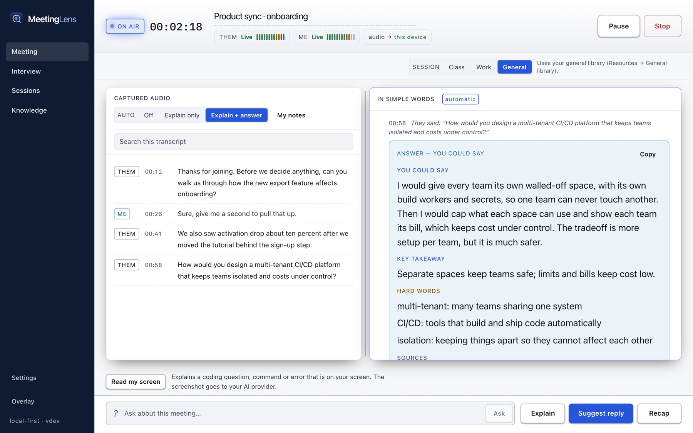
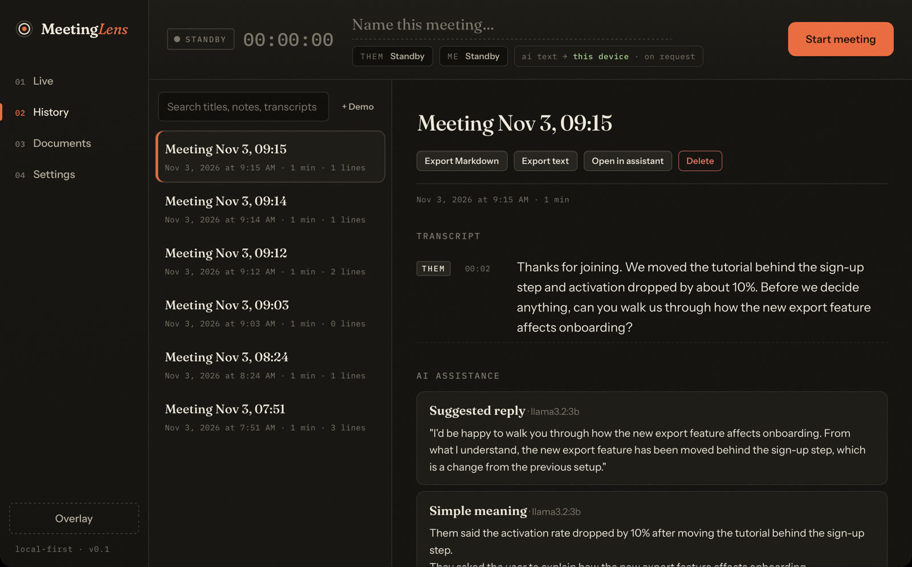

Two channels, never mixed up
Other participants (Them, from system audio) and you (Me, from the microphone) are captured separately, each with its own live level meter and clear error messages.
Local-first meeting assistant · for Mac & Windows
MeetingLens listens to your call, writes what others say in simple words as they say it, and drafts an answer when someone asks you a question. It runs on your Mac. Nothing leaves it unless you choose a cloud service.
Version 0.1.0 · free · Mac: 7.9 MB, macOS 13+, Apple Silicon · Windows: 5.5 MB, Windows 10/11 · install steps


01 · See it
Every screen in this video is a capture of the real app, with audio transcribed by whisper.cpp and answers from a local Ollama model.
02 · What it does
Other participants (Them, from system audio) and you (Me, from the microphone) are captured separately, each with its own live level meter and clear error messages.
When someone finishes a thought, its meaning appears below the transcript in short, plain sentences, with hard terms explained.
Questions get a draft answer from the transcript, your notes and your documents. It never invents your experience; where it can't know, it coaches you on what to mention.
Add TXT, Markdown or PDF files. MeetingLens finds the passages that match the conversation and shows exactly which ones it used.
A small always-on-top window beside your call, so you never switch away.
Search past meetings, reopen them in the assistant, and export Markdown or text.

03 · How it works
System audio through Apple's ScreenCaptureKit and your mic through CoreAudio, converted to the format speech engines expect.
whisper.cpp on your Mac, or Deepgram streaming. Grey partial text becomes a final line after a pause.
The newest lines go to a language model: Ollama on your Mac, or any OpenAI-compatible service you choose.
Everything is stored in a local SQLite database. API keys stay in the macOS Keychain.
04 · Privacy
05 · Get it
Early version 0.1.0. Free for Mac and, as an experiment, Windows.
Version 0.1.0 · 5.5 MB · Windows 10/11, 64-bit. Built and unit-tested on a Windows server, not yet tried on a real laptop. Expect rough edges.
whisper-cli.exe) plus a model, then set the paths in Settings → Speech.Release notes and SHA-256 checksums: v0.1.0 on GitHub. Prefer to build it yourself? See the install guide.
Open MeetingLens.dmg from your Downloads, drag MeetingLens to Applications, then open it. macOS will ask you to approve it once. See the steps
Run MeetingLens-Windows-Setup.exe from your Downloads. If Windows says it protected your PC, click More info → Run anyway. See the steps